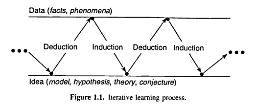
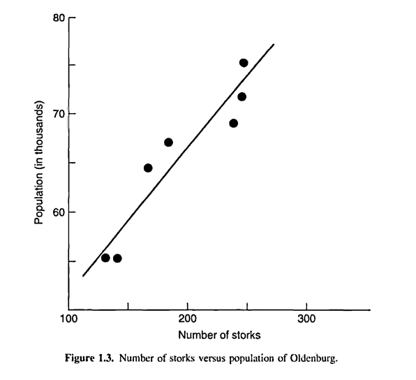

Catalizando a geração de conhecimento
Box, Hunter e Hunter, Cap. 1
O processo de aprendizado
“Conhecimento é poder”
- Conhecimento é a chave para a inovação (e lucro, se você estiver pensando nisso)
- Mas a geração de conhecimento pode ser complexa, demorada e cara
- Para ter sucesso nessa tarefa você deve aprender a aprender. Essa é a chave para:
- geração de ideias
- melhoria de processos
- desenvolvimento de novos produtos
Aprendizado dedutivo-indutivo
- O processo dedutivo-indutivo de aprendizado é orientado pelo cérebro humano
- É conhecido desde o tempo de Aristóteles e faz parte de nossa experiência cotidiana
O aprendizado avança conforme ilustrado na figura abaixo (extraída de Box, Hunter e Hunter):

- Uma ideia inicial (modelo, hipótese, etc) é levada por um processo de dedução para algumas consequências
- As consequências são comparadas com dados (informação)
- Quando as consequências e os dados não concordam, essa discrepância leva a uma modificação do modelo, um processo chamado de indução
- Um segundo ciclo se inicia: as consequências do novo modelo são comparadas com dados, que pode levar à uma nova modificação e consequente ganho de conhecimento
- O processo de aquisição de dados pode ser:
- experimentação científica
- uma consulta na biblioteca
- uma pesquisa na internet
- …
Por exemplo, ao chegar no trabalho uma pessoa estaciona seu carro todos os dias na mesma vaga de garagem. Uma tarde, após sair do trabalho, ele é levado à seguinte sequência de aprendizado dedutivo-indutivo:
| Modelo: | Hoje é um dia como outro qualquer |
| Dedução: | Meu carro estará na vaga de sempre |
| Dados: | Não está |
| Indução: | Alguém o pegou |
| Modelo: | Meu carro foi roubado |
| Dedução: | Meu carro não estará no estacionamento |
| Dados: | Não! Está lá! |
| Indução: | Alguém pegou e o troxe de volta |
| Modelo: | Um ladrão roubou e o trouxe de volta |
| Dedução: | Meu carro estará arrombado |
| Dados: | Está sem danos e trancado |
| Indução: | Alguém que tem as chaves o pegou |
| Modelo: | Minha esposa usou meu carro |
| Dedução: | Ela provavelmente deixou um bilhete |
| Dados: | Aqui está! |
Suponha que para resolver um problema, uma especulação inicial produz uma ideia:
- Você busca por dados para suportar ou refutar sua teoria
- A busca por dados pode ser:
- uma busca nos seus arquivos ou na internet
- uma consulta na biblioteca
- uma reunião com seus colegas
- observação passiva de um processo
- experimentação ativa
- Em qualquer caso, os dados podem:
- confirmar sua conjectura, e o problema está resolvido
- mostrar que sua ideia estava parcialmente ou totalmente errada
- Neste segundo caso, a diferença entre dedução e realidade é que faz com que você continue procurando
- Isto pode levar para uma ideia modificada ou totalmente diferente, para reanálise dos dados ou geração de novas informações
- O cérebro humano possui dois lados especificamente desenvolvidos para lidar com a lógica do pensamento indutivo-dedutivo. No entanto, não devemos esperar que a natureza da solução ou o caminho que levou a ela sejam únicos
Um loop de feedback
A figura abaixo mostra o processo dedutivo-indutivo como um “loop de feedback” (extraída de Box, Hunter e Hunter):

- Por dedução, você considera as consequências esperadas de \(M_1\)
- O que aconteceria se \(M_1\) fosse verdadeiro ou falso
- Você também deduz quais dados são necessários para explorar \(M_1\)
- O plano experimental (design) que você escolhe é apenas uma janela sob o verdadeiro estado da natureza
- Lembre-se que quando você conduz um experimento, a janela é sua escolha
- Os dados produzidos representam algum aspecto do verdadeiro estado da natureza, ofuscados por um maior ou menor ruído, ou seja, o erro experimental
- Os dados analisados são comparados com o que foi deduzido do modelo \(M_1\)
- Se eles concordam, o problema esté resolvido
- Se há discordância, o modelo \(M_1\) deve ser modificado
- Usando os mesmos dados, você pode considerar análises alternativas (\(M'_1\), \(M''_1\), \(\ldots\))
- Pode-se tornar claro que uma nova ideia ou modelo \(M_2\) deve ser formulada
- Isto pode requerer um novo plano experimental, para contemplar diferentes aspectos do verdadeiro estado da natureza
Considerações importantes
Conhecimento do assunto
Note a importância do conhecimento do assunto ao qual você está pesquisando, para perceber e explorar modelos alternativos e saber onde procurar ajuda.
O caminho não é único
- Claramento, o caminho para a solução de um problema não é único
- O objetivo é convergir para uma solução satisfatória
- O ponto de partida e o caminho poderão ser diferentes para diferentes pessoas
- O “Joga das 20 questões” ilustra bem esse processo, e segue o que foi exposto nas figuras acima
- o “plano experimental” é a escolha da questão
- a resposta é o “dado”
- que leva à uma nova conjectura e plano experimental (questão)
- esse caminho claramente será diferente para diferentes jogadores
- As qualidades necessárias para esse jogo são:
- conhecimento do assunto
- conhecimento da estratégia
- Conhecimento de estratégia é paralelo ao conhecimento de métodos estatísticos
- note que sem o conhecimento da estratégia, você pode sempre jogar esse jogo (talvez não muito bem)
- no entanto, sem o conhecimento do assunto, não é nem possível jogá-lo
- Claramente o melhor é usar ambos conhecimentos, da estratégia e do assunto
- É possível conduzir uma investigação sem conhecimento estatístico, mas impossível sem conhecimento do assunto
- Obviamente, ao usar conhecimentos estatísticos, a convergência para a solução do problema é muito mais rápida, e um bom investigador se torna um melhor ainda
Os problemas do investigador
Complexidade
Quando fazemos experimentos para a melhoria de um processo, é necessário considerar a influência simultânea de uma série de variáveis de entrada (e.g. temperatura, concentração , catalisador, etc) em uma coleção de variáveis de saída (e.g. rendimento, impureza, custo, etc).
Chamamos as variáveis controladas de entrada de fatores, e as variáveis de saída de respostas.
A princiapl questão é
O que faz o que, e para quem?
Com \(k\) fatores e \(p\) respostas, existem \(k \times p\) entidades a serem consideradas. Além disso:
- Um certo conjunto de fatores (e.g. temperatura e pressão) pode causar efeito em apenas uma resposta (e.g. rendimento)
- Um outro conjunto (possivelmente sobreposto, e.g. temperatura e concentração), causa interferência outra resposta (e.g. pureza)
- Alguns fatores irão interagir na presença de outros
- Por isso, o uso do “mudar um fator por vez” dificilmente produzirá resultados satisfatórios e viáveis economicamente
O uso de planejamentos estatísticos experimentais é a melhor forma de “testar” um grande número de fatores simultaneamente e conseguir uma visão de como eles se comportam isoladamente e em conjunto, ao mesmo tempo que minimiza a influência de erros experimentais.
Erros experimentais
A variabilidade não explicada por fatores conhecidos é chamada de erro experimental.
- Como algum erro experimental é inevitável, saber lidar como ele é fundamental
- Um bom planejamento experimental ajuda a a proteger que os efeitos reais de um fator sejam ofuscados por erros experimentais
- Além disso, as análises estatísticas fornecem medidas de precisão das quantidades estimadas no estudo (e.g. médias, parâmetros)
- Isso torna possível verificar se ocorre de fato uma evidência concreta na existência de efeitos reais
Correlação e causalidade
A figura abaixo mostra a relação entre o tamanho da população de Oldenburg e o número de cegonhas, observados ao final de 7 anos (extraído de Box, Hunter e Hunter):

O número de cegonhas causou o aumento da população?
A correlação entre duas variáveis \(Y\) e \(X\) geralmente ocorre porque ambas estão associadas com uma terceira variável \(W\). (Nesse caso, \(W\) seria o tempo).
Como usar técnicas estatísticas
Descubra o quanto puder sobre o problema
Faça perguntas até estar satisfeito de que entende o problema totalmente e está ciente dos recursos necessários para estudá-lo.
Algumas perguntas:
- Qual é o objetivo da investigação?
- Existem dados prévios?
- Como os dados foram coletados?
- Em que ordem? Por quem?
- Como as respostas foram medidas?
- O quanto já se conhece sobre o problema?
Conhecimento não-estatístico
- Não negligencie seu conhecimento ou de seus colegas sobre o problema
- Métodos estatísticos são inúteis sem conhecimento do assunto e experiência
Defina objetivos
- Defina claramente os objetivos do estudo
- Tenha certeza de que todas as partes envolvidas concordam com os objetivos
- Certifique-se de que possui todos os equipamentos, dinheiro, computadores para executar a proposta
- Defina claramente o critério que irá determinar quando os objetivos forem alcançados
- Se os objetivos tiverem que ser alterados, faça com que todos os interessados saibam e concordem
Interação entre teoria e prática
Enquanto investigadores ganham a partir do uso de métodos estatísticos, o contrário é ainda mais verdadeiro. Um especialista em estatística pode se beneficiar enormemente de suas discussões com pesquisadores de outras áreas.
A geração de ideias realmente novas em estatística parece sempre surgir de interesses em problemas práticos:
- Sir Ronald Fisher (inventor de praticamente todas as ideias que veremos nesse curso) foi um cientista que gostava de trabalhar de perto com outros investigadores
- William S. Gosset (aka “Student”) possuia uma conexão muito forte entre a pesquisa estatística e os problemas práticos com os quais lidava
Os trabalhos de Fisher e Gosset são uma marca da “boa ciência”, a interação entre teoria e prática. Seu sucesso como cientista e suas habilidades de desenvolver técnicas estatísticas úteis foram altamente dependentes de seus envolvimentos com o trabalho experimental.
Referências
- Box, GEP; Hunter, JS; Hunter, WG. Statistics for experimenters: Design Innovation and Discovery. John Wiley & Sons, 2005.

Este conteúdo está disponível por meio da Licença Creative Commons 4.0